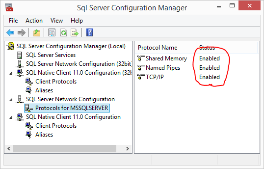
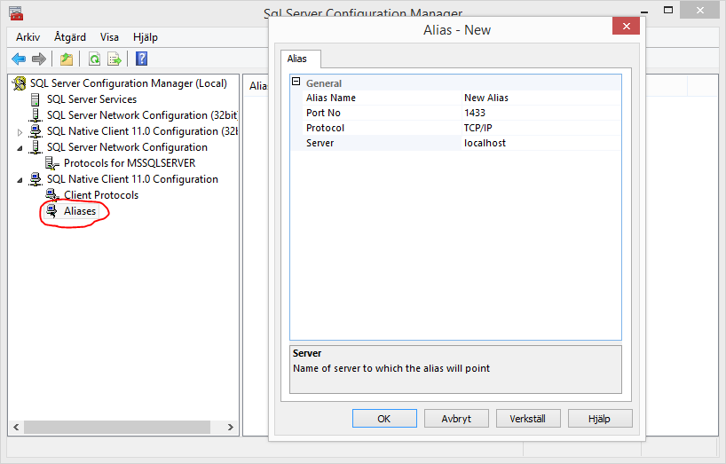
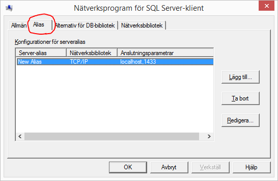

Your reality as a programmer if often that the application that you and your team are writing is going to be run on a number of test- and production environments. The normal case is that these contain computers with different names and/or DNS addresses.
This means that your application configuration needs to be different on each and every environment. There exists a bunch of tools to solve this problem, and it is usually done with transformation of configuration files. Ouch!
Now, can you imagine a world where transformations of configuration files are not needed? At least not due to different addresses to the database server.
SQL Native Client Alias
A feature of SQL Server is that its clients can use aliases for database instances. You can call an alias whatever you want, and it can be run over either TCP or Named Pipes. This is not a miracle per se, since similar functionality can be achieved with help of a DNS-server, or why not an entry in the Windows host file.
What a SQL Client Alias can do that none other can, is to point out a named database instance on a target computer. But most importantly, configuring an alias does not require any out of the ordinary access rights (administrative rights to be precise). Developers does not typically have access to tamper with the company DNS server, and are usually too lazy to install their own…
Something that is a bit troublesome with SQL Client Aliases is that there exists 32- and 64-bit versions. It would have been reasonable that they shared the same list of configured aliases, but they do not. If you have both types of applications, you have to configure your alias twice.
Configuring with SQL Server Configuration Manager
To be able to connect to a SQL Server through an alias, the server needs to enable access over either Named Pipes or TCP/IP. This can be done by fiddling in SQL Server Configuration Manager, followed by a restart of the SQL Server service.

Then to create a new alias, enter it under one of the nodes named SQL Native Client 11.0 Configuration, like so.

The good part with this method of configuring an alias is that you will probably be able to remember how to start SQL Server Configuration Manager, but the bad part is that it will only be available on a computer that has the features Client Components and Management Tools of SQL Server installed.
Having SQL Server installed on your development machine is fine, but what if you do not want to install it on environment client machines?
Configuring with cliconfg.exe
Since Windows 2000-isch, an application called cliconfig.exe has come bundled with Windows which can be used to configure SQL Client Aliases. Nice! Sounds promising.
You can start it by running cliconfig.exe from the Run Dialog, since it is already included in PATH. Wait… If only it was that easy. You need to be aware of that when run like this on a 32-bit OS, the 32-bit cliconfig.exe will be run. Naturally on a 64-bit OS, the 64-bit version will be run. You must consider which version your applications actually require and start the same version of cliconfig.exe.

To start a specific version, please use the following paths (no, they are not mixed up):
- 32-bit,
C:\windows\syswow64\cliconfg.exe - 64-bit,
C:\windows\system32\cliconfg.exe
Ouch again! To have to configure both 32- and 64-bit aliases is a pain, is there no better way to do this?
PowerShell to the rescue
Luckily, configured aliases are stored in the Windows registry. Therefore it is possible to automate the task of setting up SQL Client Alias with PowerShell.
An example of how this can be done:
1 | function Set-SqlClientAlias { |
I have intentionally left out the ability to use the Named Pipe protocol since I think it is not of much use in this case. Databases are often run on dedicated servers, so your application cannot talk to them with pipes anyway. If you really want to use Named Pipes anyway the registry item value should look something like DBNMPNTW,\\myserver\pipe\sql\query.
I wish you a pleasant configuration experience! :)